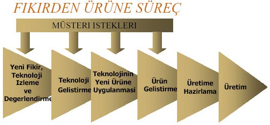
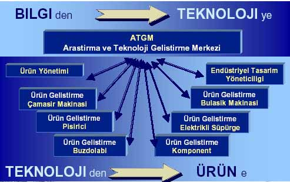
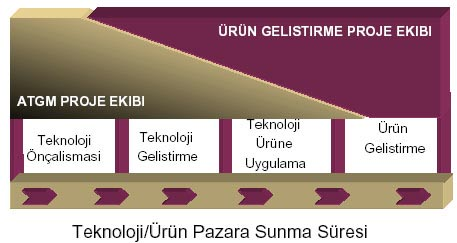

|
Doç.
Dr. M. Yalçýn Tanes
Arçelik
Araþtýrma ve Teknoloji Geliþtirme Merkezi
Ýstanbul, 3 Ekim 2002
(Bu
makale, ÝSO Odakule Meclis Salonu'nda, 3 Ekim 2002 tarihinde
Ýstanbul Sanayi Odasý ile Teknoloji Yönetimi Derneði'nin ortaklaþa
düzenledikleri "Ürün Geliþtirmenin Olmazsa Olmazlarý"
konulu seminerde yapýlan bir sunumdan derlenmiþtir.
Bu makalenin 3MB boyutlu pdf formatýndaki versiyonu www.tyd.org.tr/etkinlik.html
adresinden indirilebilir)
IÇERIK:
-
Tanimlar
-
Yenilikcilik / Inovasyon Süreci
-
Arçelik Teknoloji Gelistirme Deneyimi
-
Ürün Gelistirme Süreci
-
Ar-Ge Performansinin Ölçümü
-
Sonsöz
TANIMLAR:
-
TEKNOLOJI
Bireyin veya kurulusun bir hizmeti yapmak veya bir ürünü
ortaya koymak için sahip oldugu bilgi, beceri ve
yeteneklerin tümü onun teknolojisidir.
Teknolojisi ona, "BEN BU ISI YAPABILIRIM" dedirtmektedir.
- TEMEL
ARASTIRMA
Doganin sirlarina ait bilgileri ögrenmeyi hedefleyen çalismalar
"Temel Arastirma" dir.
- MÜHENDISLIK
Bilimin sagladigi bilgileri teknoloji haline getiren ve
insanin kullanimina hazir haldeki ürünler olarak sunan metodoloji
ve faaliyetlerin tümüne Mühendislik denir.
- UYGULAMALI
ARASTIRMA / TEKNOLOJI GELISTIRME
Bilginin teknolojiye dönüstürülmesi "Uygulamali Arastirma"
veya "Teknoloji Gelistirme" dir.
- (ÜRÜN)
GELISTIRME
Teknolojinin ürüne ve üretim yöntemlerine dönüstürülmesi
için uygulanan mühendislik faaliyeti "Ürün/Üretim Gelistirme"
dir.
- YENILIKCILIK
= INOVASYON
Yeni bir fikrin dogusundan, insanlara yararli ve onlarin
satinalacagi bir ürün haline getirilmesine kadar geçen süreçtir.
YENILIKCILIK
/ INOVASYON SÜRECI:
- 21.
yy'da teknoloji sirketlerin elindeki en önemli güçlerden
biridir.
-
Türkiye'de "Ürün Gelistirme" yeni baslamis, "Teknoloji
Gelistirme" ise ......
-
Türkiye "Teknoloji Ithal Eden Ülke" konumundadir.
-
Teknoloji/Ürün gelistirme için olumlu adimlar vardir. Acaba
yeterli midir?
TÜRKIYE'de TEKNOLOJI/ÜRÜN GELISTIRME KÜLTÜRÜ
-
21. yy'da teknoloji sirketlerin elindeki en önemli güçlerden
biridir.
-
Türkiye'de "Ürün Gelistirme" yeni baslamis, "Teknoloji
Gelistirme" ise ......
-
Türkiye "Teknoloji Ithal Eden Ülke" konumundadir.
-
Teknoloji/Ürün gelistirme için olumlu adimlar vardir. Acaba
yeterli midir?
TEHLIKE
Düsük
seviyedeki teknolojiler ile dünya sanayii karsisinda iç ve
dis pazarlarda rekabette korumasiz kalmak ve yalniz ucuz isgücüne
dayanarak üretim yapabilen ve her an üçüncü dünya ülkelerine
elindeki isi kaptirabilecek duruma düsmek
FIRSAT
Genç,
iyi egitim görmüs kadrolar ile, yeni teknolojileri verimli
sekilde kullanarak, gelistirerek, güncel ve özgün teknolojilerle
dünya standartlarini yakalamak ve asmak üzere kaynaklari verimli
olarak yönetmek

FIKIRDEN
ÜRÜNE SÜREÇ
-
Süreç evrensel
- Organizasyon
her sirketin kültürü ve ihtiyacina göre farkli
- 1
asamali (Tüm Ar-Ge süreci tek bir birimde)
- 2
asamali (Teknoloji Gelistirme - Ürün Gelistirme birimleri)
- 3
asamali (Sirket çapinda Teknoloji Gelistirme - Öncü
Ürün Gelistirme - Ürün Tasarimi ve Uygulama)
- Global
(Tüm dünyaya yayilmis enternasyonal Ar-Ge birimleri)
Ar-Ge
KUSAKLARI
1. Kusak : Ar-Ge
bir yetenek isidir. Sanattir.
2.
Kusak (1950 sonrasi) : Ar-Ge
bir metodoloji ve plan isidir.
3.
Kusak (1980 sonrasi) : Ar-Ge
müsteri için yapilir.
4.
Kusak (2000 sonrasi) : Ar-Ge
tüm paydaslarca beraber yapilir.
ARÇELIK
TEKNOLOJI GELISTIRME DENEYIMI:
Türkiye'de ar-ge ortaminin bütün zorluklarina karsin...
-
Gerekli Kültürü Olusturarak,
-
Ar-Ge Faaliyetlerini Evrensel Kurallarina Uygun,
-
Netice Alacak, Deger Katacak Sekilde,
-
Kendi Bünyesine Uydurarak Sürdürmek
21.
asirda ayakta kalmak isteyen endüstrilerin tek seçenegi olarak
gözükmektedir..
ATGM
ILKELERI
-
Ürün gelistirmenin yaninda "teknoloji gelistirme"
birimi.
-
Yazili misyon ve vizyon'a sahip olma.
-
Müsteri ilkesi.
-
Teslim edilecek ürünü tanimlanmis arastirma programlari.
-
Uzmanliga dayali altyapi.
-
Disiplinlerarasi projeler.
-
Projelerde Kalite, Zaman ve Bütçeye Uyum.
-
Raporu yayinlanmamis proje bitmis sayilmaz.
-
% 70 teknoloji üretme - % 30 gelecegi hazirlama
BASARILI BIR Ar-Ge IÇIN KOSULLAR
-
Üst Yönetim Destegi
-
Yeterli Kaynak
-
Optimum Zaman
-
Anahtar Konularda Yetismis Uzmanlar
-
Laboratuvar Altyapilari
-
Bilgisayar Donanimi ve Analiz Yazilimlari
-
Arastirma-Gelistirme Ortami
-
Sirket Kültür Degisimi
RAKIPLER
- "Uçma"
tuzagi
- "Kaybolma"
tuzagi
-
Teknolojiyi hazir elde etme aliskanligi
-
Hyperaktivite, sabirsizlik
-
Takdir edilmeme
-
Kartvizit kültürü


TEKNOLOJI
GELISTIRME'de PROJE ASAMALARI
- Proje
Olusturma (Ön Fizibilite Çalismasi)
- Proje
Yürütme ve Izleme
- Proje
Sonlandirma
PROJE
OLUSTURMA - ÖN FIZIBILITE GEÇIT <-1>
-
Tüm arastirmacilar proje önerebilirler.
-
Projenin yürütülmesi için gerekli bilgileri toplamak ve
"Teknik Fizibilite"yi ortaya koymak için zaman
ve kaynak açisindan sinirli ön çalismalari içerir.
-
Çalismanin sonunda derlenen bilgiler uzmanlarin ve ilgililerin
katildigi bir sunusta tartisilir. (Geçit<0>)
-
Projenin devamina karar verilirse, bundan sonraki asamanin
hedefi "Proje Kitabi"nin yayinlanmasidir.
PROJE KITABI
Proje
Kitabi, Proje Ekibi / Müsteri / ATGM Yönetimi arasinda bir
sözlesmedir.
- Projenin
amaç ve ürünlerini,
- Projede
uygulanacak yöntemi,
- Proje
planini ve kilometretaslarini,
- Gerekli
kaynaklari ve bunlarin onaylarini,
- Sirkete
getirecegi yararlari içerir.
PROJE
YÜRÜTME ve IZLEME
- Yetkelendirilmis
Proje Ekipleri.
- Iletisim
Plani:
- Proje
ekip içi iletisim
- Müsteri
ile iletisim
- Süreç
Sorumlusu ile iletisim
- Projenin
Bilgisayar Ortaminda Günlenmesi ve Izlenmesi.
PROJE
SONLANDIRMA
-
Projenin tüm hedeflerine ve çiktilarina ulasmasi ile projenin
kapatilmasi süreci baslar.
-
Bu süreçteki etkinlikler:
-
Raporlamalarin tamamlanmasi (Teknik ve idari)
-
Fikri haklarin yönetimi
-
Proje son degerlendirmesi
-
Proje ekibinin degerlendirmesi
-
Bilgi ve teknolojilerin transferi
-
Müsteri görüslerinin alinmasi
ÖNERILER
-
Teknoloji Gelistirme projeleri (gerektigi kadar) planlanmalidir.
-
Ara gözden geçirmeler için milestone'lar koyulmasi süreci
daha verimli kilmaktadir
-
Sürecin etkinliginin ve çiktilarin sürekli ölçümü dogru
yönlendirmede yardimcidir.
-
Planlanandan sapmalara Teknoloji Gelistirme projelerinde
hazir olunmalidir.
ÜRÜN
GELISTIRME SÜRECI:
ASAMALAR
- Kavramsal
Tasarim
- Ürün
Tasarimi
- Devreye
Alma
KAVRAMSAL
TASARIM
-
Pazar analizleri, Mevcut ürün gaminin degerlendirilmesi
-
Ürün benchmark çalismalari
-
Hedef satis fiyati ve adedinin belirlenmesi
-
Fizibilite çalismalari
-
Stil/modelleme çalismalari
-
Yeni ürün fonksiyon ve teknik özelliklerinin belirlenmesi
-
Teknoloji gelistirme/uyarlama çalismalari
-
Proje ekibinin belirlenmesi, Proje plani çalismalari
Çikti
: Proje Kitabi
Dönüm Noktasi : Proje Onayi
ÜRÜN TASARIMI
-
Ayrintili ürün tasarim çalismalari
-
Komponent seçimleri
-
Make or buy çalismalari
-
Operasyon ve montaj planlari
-
Kalite planlari
-
Grup ve ürün prototiplerinin sinanmasi
-
Kalip - Teçhizat siparisleri
Çikti
: Tasarim ve Proses Dogrulanmasi
Dönüm Noktalari : Yatirim Karari - Üretim Karari
DEVREYE
ALMA
-
Tesis kurma çalismalarinin tamamlanmasi
-
Deneme üretimi
-
Kontrollü saha testleri
-
Egitimlerin tamamlanmasi
-
Tekrarli üretim denemesi
Çikti
: Pazara sunulacak ürün
Dönüm Noktasi : Satis Onayi
ARÇELIK,
-
Önümüzdeki dönemde uluslararasi arenada var olabilmek için
teknolojinin önemini görmüstür.
-
Teknoloji ve ürün gelistirme altyapisini kurmustur.
-
Bu yaklasimin olumlu sonuçlari gözlenmektedir.
- Özgün
ürün orani % 100
- Dünya
klasinda teknoloji
- Sirketin
bagimsizligi
- Dis
pazarlara açilma olanagi, ihracatta artis
AR-GE
PERFORMANSININ ÖLÇÜLMESI:
- Ölçütlerin
belirlenmesi çok güç! Buna ragmen ölçülmeli.
-
Sürecin performansinin ölçülmesi, departmanlarin ve bireylerin
performanslarinin ölçülmesinden çok daha önemli.
-
Ölçüt / Gösterge ve Hedefler sirketlerin amaç ve dogrulari
ile uyumlu olmali.
DEGER
KATMA
- Inovasyon
süreci, deger katmalidir.
- Bu
degerin ölçülebilmesi
- üst
yönetimin sahiplenmesi
- sürecin
dogru yönlendirilmesi
- çalisanlarin
motivasyonu açisindan çok önemlidir.
- Katilan
degeri hesaplayabilirseniz, tahminden yüksek oldugunu göreceksiniz.
ÖLÇÜT
ÖNERILERI
- Girdi/Potansiyel
Ölçütleri
-
Inovasyon sürecindeki eleman, harcanan para
-
Portföydeki proje sayisi ve bunlarin dagilimi
- Süreç
Ölçütleri
- "Time
to market"
-
Geri dönüs sayisi
-
Sürece harcanan insan kaynagi
ÖLÇÜT ÖNERILERI
- Hedeften
Sapma Ölçütleri
-
Kalite, zaman, maliyet hedeflerine uyum
-
Öngörülen spesifikasyona uyum
- Sonuç
Ölçütleri
-
Projenin mali getirisi
-
Müsteri memnuniyeti
-
Ürün geri dönüs oranlari
SONSÖZ:
- Arçelik,
"Teknoloji Gelistirme"yi de içeren inovasyon sürecini
olusturmus, 10 yili askin bir deneyim edinmistir.
-
Ar-ge süreci, evrensel kurallar sirket kültürüne entegre
edilerek yürütülmektedir.
-
Teknoloji/Ürün gelistirme sürecinde proje bazli çalisilmaktadir.
-
Bu yaklasimlarin olumlu sonuçlari alinmaya baslamistir.
Ýlgili
Linker:
Haberler
> 23.12.2002 > Arçelik'de
ürün geliþtirme yapýlanmasý ve patent baþvurularýndaki artýþ
Haberler > 06.10.2002
> Arçelik,
kullandýðý son yabancý lisansý da terketti
|